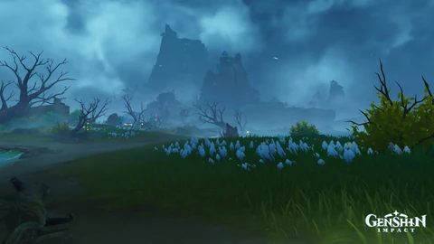

Inazuma · Geography & Locations
Tsurumi Island
Tsurumi Island’s ruins hold traces of an older civilization and a later Thunderbird-worshipping community. Through the Mists reveals Ruu’s sacrifice and the lifting of Kapatcir’s curse; a later Archon Quest connects the Seirai Thunderbird to primordial Electro power and dragon rebirth.

Two Eras Beneath the Fog
Tsurumi Island is Inazuma’s southern island, introduced through NPC dialogue before becoming explorable in Version 2.2. Its ruins point to more than one distant past: underground sites and murals belong to an older civilization, while later records describe an island community that worshipped the Thunderbird. The murals are evidence of what their makers depicted; their every symbol and the island’s exact prehistory are not fully explained.
The later islanders believed the Thunderbird protected them. A boy named Ruu befriended the bird and gave it the name Kanna Kapatcir, ‘Great Eagle of the Storm.’ The priests nevertheless prepared to sacrifice him in a ritual. When Ruu was killed, Kapatcir’s grief and anger became bound to the island’s recurring catastrophe and fog.
Through the Mists and Ruu’s Song
The Version 2.2 Through the Mists quest series follows the Traveler through the perches and the memories of Tsurumi’s inhabitants. Its four quests — A Particularly Particular Author, Octave of the Maushiro, The Sea of Fog and the Rite of the Trees, and The Sun-Wheel and Mt. Kanna — reveal the sacrifice and the islanders’ repeated final days. Their apparent routine is not ordinary village life continuing in the present.
The Traveler helps Ruu return to Seirai and sing to the Thunderbird’s lingering power. That promise is fulfilled and the original curse is lifted. The quest resolves Ruu’s bond with Kapatcir, but it does not make the island’s old murals a complete chronology or explain every civilization that once occupied the region.
The Thunderbird in Later History
Chapter VII: Act VI, A Yesterday Sent From Beyond, adds new context. Ei says she slew a great Thunderbird on Seirai and explains that elemental dragons can give rise to another dragon through the continuation of their elemental energy. She says she severed the connection between that primordial Electro energy and time, then later releases the Thunderbird’s power into the Raiden Shogun’s body. The Traveler and Paimon discuss the event as the release of the Electro Dragon.
This later scene invites a connection between the Seirai Thunderbird and Tsurumi’s Kanna Kapatcir, whose history also ends with Ei killing a Thunderbird on Seirai. The dialogue does not itself say ‘Kanna Kapatcir is the Electro Dragon Sovereign,’ so the page records the dragon connection and the exact limit of the stated identification separately. The release of the Thunderbird’s power in Act VI is also a later event than Ruu’s song and the lifting of Tsurumi’s curse.
This is an original CoreGG reading guide, not an official HoYoverse article or a reproduction of the game text. Source links below identify the records used so you can check the original context.
Sources & references
Check these sources for the original game text and reference trail.